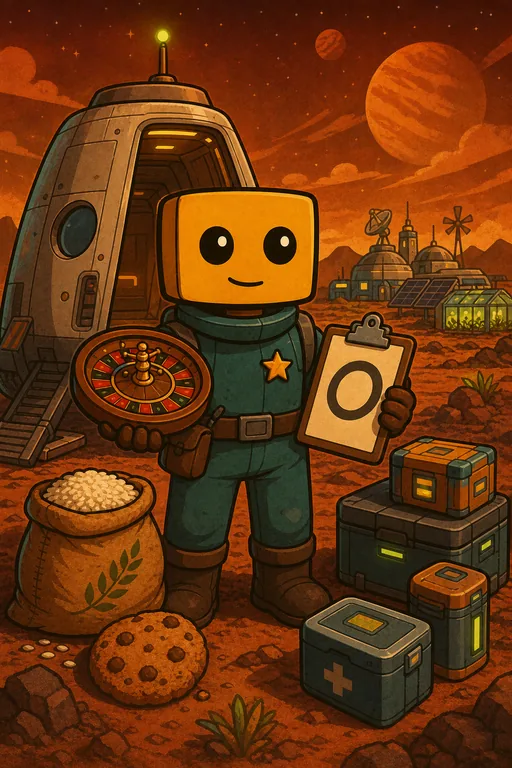

Расписание стримов
по МСКПонедельник — пятница17:00МСК
Суббота — воскресенье15:00МСК
Предлагайте идеи для прохождения RimWorld. Они попадают в общую рулетку, а выбранные варианты становятся новыми форматами стримов. Текущая цель — 13 000 ₽. После каждого заполнения следующая цель становится дороже на 1 000 ₽, а донаты и остаток не обнуляются.

Задумка осталась прежней: зрители наполняют рулетку, а каждый новый старт превращается в отдельный челлендж.
Отправь донат от 100 ₽ и напиши в сообщении название, условие и желаемую цель челленджа.
Между стартами форматов рулетка выбирает идею. Выбранная идея уходит из списка.
Идея становится колонией на один или несколько стримов — пока интересна чату и стримеру.
Все колонии и заявки прошлого сезона обнулены. Здесь появятся первые участники новой очереди.
Здесь появится первый выбранный формат второго сезона. Предложения уже можно добавлять в новую рулетку.
Забросить идеюПрошедшие форматы, записи стримов и использованные сборки.
В сообщении к донату нужно кратко объяснить идею, её главное условие и желаемый результат прохождения.
Пример: «Колония кочевников — нельзя строить постоянную базу — посетить пять поселений и покинуть планету».
Для подготовки заранее выбираются три ближайшие идеи. Между форматами возможны коллаборации или технические стримы со сборками.
В рулетку можно добавить специальный лот. Если он выпадет, вне основного расписания пройдёт отдельный выбор новой игры с участием чата и донатов.
Выпадение лота запускает выбор новой игры, но не гарантирует автоматический запуск конкретной игры, указанной в донате.
Для колоний второго сезона будет много разных порядков модов. Перед запуском сборки проверяйте актуальную версию на Boosty — там будут ссылки, порядок загрузки и обновления.
Открыть BoostyСтримы, анонсы, сборки и тот самый подвал — всё нужное в одном месте.